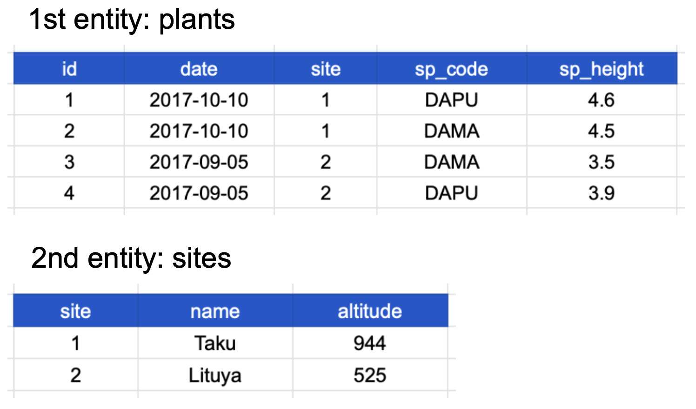
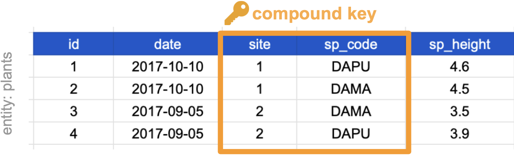
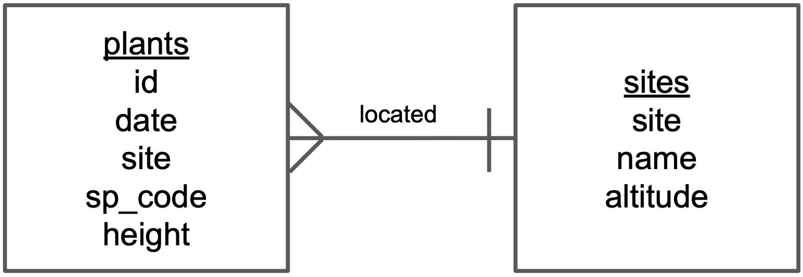
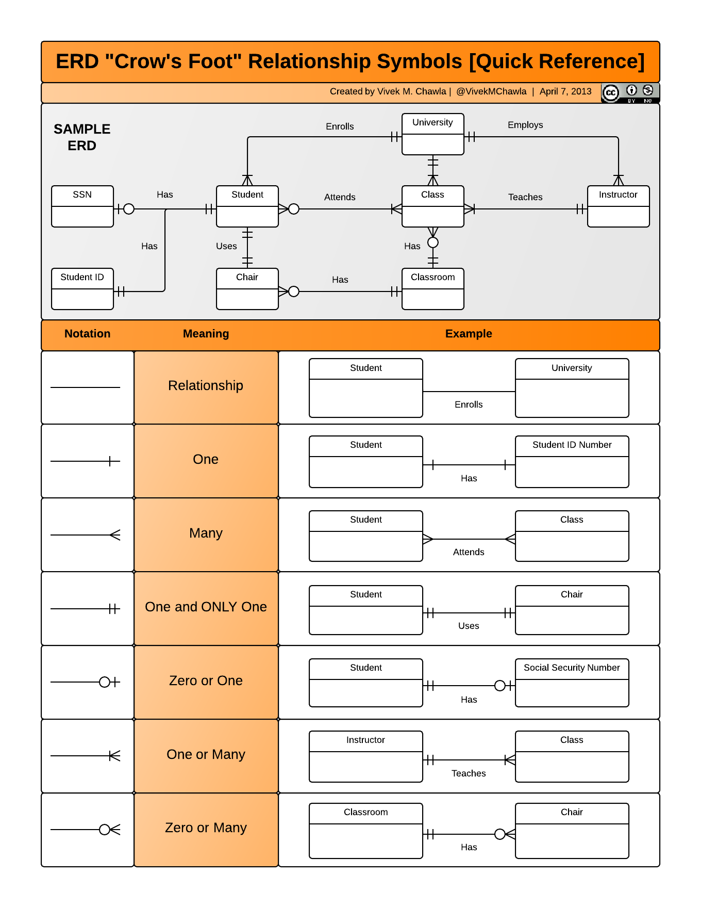

Monday: Tidy data principles
Today: How tables relate to each other
The question: If normalized data splits information across tables, how do we put it back together?
The answer: Keys
Keys and Relational Thinking
Week 5, Day 2
BIO/CHEM 806
Welcome Back!
Monday: Tidy data principles
Today: How tables relate to each other
The question: If normalized data splits information across tables, how do we put it back together?
The answer: Keys
Monday Recap
Three principles of tidy data: 1. Each column is a variable 2. Each row is an observation 3. Each cell is a single value
Normalization: Separate tables for different entities
The tension: We separated plant and site data… now what?
Today’s solution: Relational data models
Why We Separate Tables
Recall: Denormalized data repeats information
id species height site site_name altitude
1 ACRU 120 A Oak Grove 250
2 PIST 85 A Oak Grove 250
3 QURU 98 A Oak Grove 250Problem: “Oak Grove” and “250” repeated unnecessarily
If site name changes: Must update multiple rows (error-prone!)
Normalized Data (From Monday)

Two tables, no redundancy
But how do we know which plant came from which site?
Answer: Keys
What Is Relational Data?
“It’s rare that a data analysis involves only a single table of data. Typically you have many tables of data, and you must combine them to answer the questions that you’re interested in. Collectively, multiple tables of data are called relational data because it is the relations, not just the individual datasets, that are important.”
— R for Data Science
Key insight: The connections between tables matter as much as the tables themselves
What Are Keys?
Key: A variable whose values uniquely identify observations
In tidy data: A column where each row has a unique value
Purpose: Create links between tables
Example: site_id connects the plants table to the sites table
Keys are how we maintain relationships when data is normalized
Two Types of Keys
Primary Key:
- The CHOSEN unique identifier for a table - One per table - Uniquely identifies each row in THIS table - Example: plant_id in the plants table
Foreign Key:
- References a primary key in ANOTHER table - Creates the link between tables - Example: site_id in the plants table (references sites table)
A column can be both: Primary key in one table, foreign key in another
Example: Identifying Keys
Plants table: - Primary key: id (unique for each plant) - Foreign key: site (links to sites table)
Sites table: - Primary key: site (unique for each site) - No foreign keys
Choosing a Primary Key
Which column could be a primary key?
Must have unique values in each row
Plants table candidates: - date? ❌ Multiple plants measured same day - site? ❌ Multiple plants per site - sp_code? ❌ Multiple individuals of same species - sp_height? ❌ Two plants could have same height - id? ✅ Created specifically to be unique
Often you need to CREATE a primary key
Compound Keys
Sometimes: No single column is unique
Solution: Combine multiple columns
Example:
site date species
A 2024-01-15 ACRU <- combination is unique
A 2024-01-15 PIST <- combination is unique
A 2024-01-16 ACRU <- combination is uniqueCompound key: site + date + species together
This is VERY common in ecological data
Compound Key Example

Neither site nor sp_code alone is unique
Together they are: Each site-species combination appears once
This is perfectly valid and very common!
Other Key Types
Natural Key: Already exists in your data
- Example: species_code, site_id from field labels
Surrogate Key: Created specifically as an identifier
- Example: Auto-incrementing id column (1, 2, 3, …)
Each has trade-offs: - Natural keys: Meaningful but can change - Surrogate keys: Stable but meaningless alone
Best practice: Choose based on your data and needs
Relational Data Models
Relational data model: A formal way to describe how tables connect
Benefits: - Powerful searching and filtering - Handle large, complex datasets - Enforce data integrity (consistency) - Reduce errors from redundant updates
Used by: Databases (MySQL, PostgreSQL), but useful even in R!
You’re already using this: Every time you have multiple CSV files
Entity-Relationship Diagrams
Entity-Relationship (E-R) diagram: Visual representation of table structure and relationships
Useful for: - Planning data collection - Documenting complex databases - Communicating data structure to collaborators
We’ll build a simple one together
Building an E-R Diagram: Step 1
Step 1: Identify entities (tables)
Draw a box for each:
┌─────────┐ ┌─────────┐
│ plants │ │ sites │
└─────────┘ └─────────┘Entity = Table = Type of thing you’re measuring
Building an E-R Diagram: Step 2
Step 2: List variables (columns)
┌─────────────┐ ┌──────────────┐
│ plants │ │ sites │
├─────────────┤ ├──────────────┤
│ id │ │ site │
│ date │ │ name │
│ site │ │ altitude │
│ sp_code │ │ │
│ sp_height │ │ │
└─────────────┘ └──────────────┘Building an E-R Diagram: Step 3
Step 3: Mark primary and foreign keys
┌─────────────┐ ┌──────────────┐
│ plants │ │ sites │
├─────────────┤ ├──────────────┤
│ PK: id │ │ PK: site │
│ date │ │ name │
│ FK: site ───┼──────┤ altitude │
│ sp_code │ │ │
│ sp_height │ │ │
└─────────────┘ └──────────────┘PK = Primary Key, FK = Foreign Key
Building an E-R Diagram: Step 4

Step 4: Add relationship descriptions
“A site has many plants”
“A plant belongs to one site”
The symbols show cardinality: One-to-many relationship
ERD Crow’s Foot Notation

These symbols describe HOW MANY: - One and only one - Zero or one - One or many - Zero or many
Why Bother with E-R Diagrams?
For simple projects: Probably overkill
For complex projects: - Clear communication tool - Planning data structure before collection - Documentation for future you - Collaboration with database developers
Example use case: Planning a multi-year study with many data types
Think of it as: Pseudocode for your data structure
Keys as Scientific Assumptions
Choosing a key is a scientific decision!
Example: Using site + date + species as compound key assumes: - Only one measurement per species per site per date - Re-measuring same species at same site = different date
If you measured twice in one day:
Your key isn’t unique anymore!
This is why we CHECK keys (we’ll learn how in R)
Pseudocode: Checking a Key
To verify a column is a valid key:
1. Count the total number of rows
2. Count the number of unique values in the proposed key column
3. If counts match → valid key
4. If counts don't match → not unique, can't be keyNext week: We’ll write actual R code to do this
Today: Just understanding the concept
When Keys Fail
Common key problems:
All of these break relationships between tables
We’ll learn to detect and fix these in Weeks 6-7
Thinking Exercise: Survey Data
You’re designing a bird survey database:
Table 1: Observations
- Which bird species - How many individuals
- Date and time - Location
Table 2: Sites - Site characteristics - Habitat type
Table 3: Observers - Who did the survey - Experience level
Question: What keys connect these tables?
Thinking Exercise: Answer
Observations table: - Primary key: observation_id (or compound: site_id + date + species) - Foreign keys: site_id, observer_id
Sites table: - Primary key: site_id
Observers table: - Primary key: observer_id
The keys create the web of relationships
The Incomplete Puzzle
We’ve learned: - How to structure individual tables (tidy data) - How to identify different entities (normalization) - How to link tables (keys)
What we HAVEN’T learned: - How to actually combine tables in R
That’s Week 7: Joins
For now: Focus on recognizing keys in your data
Keys Best Practices
When choosing primary keys: - Make them meaningful if possible - Keep them stable (don’t change values) - Ensure they’re always present (no NAs) - Document your choice
When using foreign keys: - Match the primary key exactly (type, format) - Check for typos and inconsistencies - Verify all foreign key values exist in the referenced table
Remember: Keys are the glue holding relational data together
Looking Ahead
Week 6: Data wrangling - Cleaning messy data - Transforming wide to long (and back) - Filtering, selecting, creating new variables - Actually IMPLEMENTING tidy principles in R
Week 7: Joins - Left join, right join, inner join, full join - Combining tables using keys - Detecting and handling join problems
Today’s concepts are foundation for both
Today’s Activity
Hands-on practice: 1. Identify tidy vs. untidy data 2. Recognize variables, observations, and entities 3. Identify primary and foreign keys 4. Draw simple E-R diagrams
Materials: Handouts with real (messy!) data examples
Working in pairs
Goal: Build intuition before writing code
Connections to Scientific Practice
You already do this in the lab:
Lab notebook entries: - Sample ID (key) - Links to protocol version - Equipment used - References to other samples
Field data sheets: - Plot ID - Links to site information - Researcher code
Keys = Citations for data
They let you reference without repeating
Exit Ticket
Write pseudocode that checks whether a column can serve as a unique key
Should include: - How to count total rows - How to count unique values - How to compare the counts - What to conclude from the comparison
Submit on Canvas
Next week: Building wrangling pipelines in R!